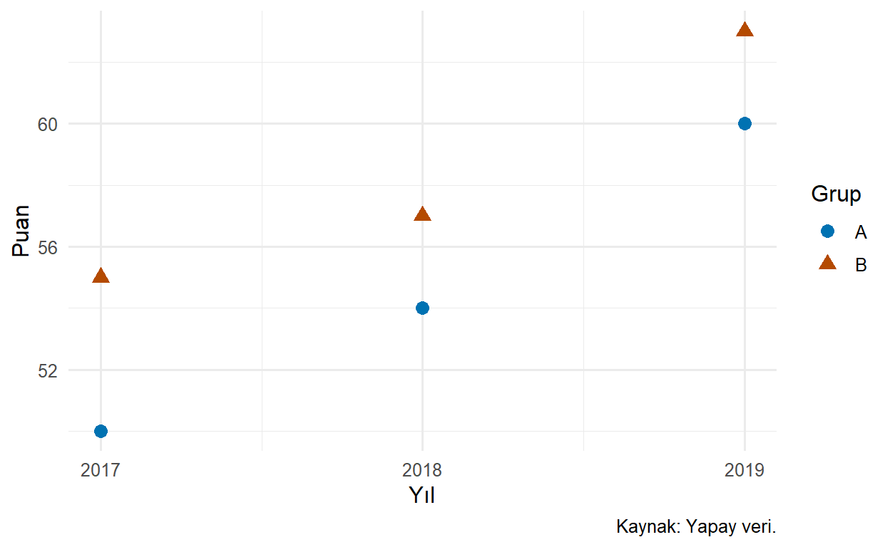
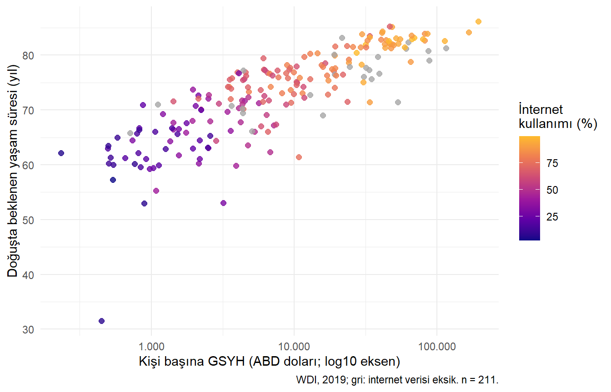

Bir grafikte aynı veri daha geniş bir eksen aralığında küçük, dar bir aralıkta büyük farklar gibi görünebilir. Kategorilere verilen renkler de benzerlik veya karşıtlık izlenimi yaratabilir. Bu nedenle ölçek, renk ve etiket seçimi sonradan eklenen süsler değildir; okuyucunun veriyi nasıl okuyacağını belirleyen kararlardır.
Ölçek, verideki değerlerle konum, renk veya büyüklük gibi estetik özellikler arasında dönüşüm kurar. Etiket ise bu temsilin ne anlama geldiğini açıklar. Ölçek doğru olsa da eksende birim yazmıyorsa okuyucu ölçümü yanlış anlayabilir (Wickham 2016).
25.1 Öğrenme Hedefleri ve Ön Koşullar
Bu bölümün sonunda sürekli ve ayrık ölçekleri seçebilecek; eksen dönüşümü, veri dönüşümü ve yakınlaştırmayı ayırabilecek; uygun renk düzenleri kullanabilecek; sayı, yüzde ve tarih etiketlerini düzenleyebileceksiniz. Eşleme, geometri ve facet bilgileri ön koşuldur.
25.2 Sürekli ve Ayrık Ölçekler
Sürekli ölçek, gelir veya yaşam beklentisi gibi sayısal değerleri temsil eder. Ayrık ölçek ise ülke veya gelir grubu gibi kategorileri temsil eder. Sayısal görünen kodların kategori olabileceğini hatırlayalım; gerekirse factor() ile amaç açıkça belirtilmelidir.
library(ggplot2)countries <- readr::read_csv("data/countries.csv", show_col_types =FALSE)gelir_yasam <- countries |> dplyr::filter(year ==2019, !is.na(gdp_per_capita_usd),!is.na(life_expectancy_total))# Logaritmik eksene geçmeden önce sıfır ve negatif değerleri denetliyoruz.c(kullanilan =nrow(gelir_yasam),pozitif_olmayan_gelir =sum(gelir_yasam$gdp_per_capita_usd <=0))
kullanilan pozitif_olmayan_gelir
211 0
Mevcut veride 211 kayıt kalır ve bunların kişi başına GSYH değerleri pozitiftir. Geliri eksik altı kayıt grafiğe alınmaz. Bir sonraki örnekte eksenleri dönüştürmek için ayrıca gözlem elememiz gerekmiyor. Başka bir veri sürümünde pozitif olmayan değer çıkarsa önce anlamı araştırılmalı, sessizce silinmemelidir (World Bank 2026).
25.3 Eksen İşaretleri ve Etiketler
scale_x_continuous() sürekli yatay ölçeği düzenler; dikey karşılığı scale_y_continuous() fonksiyonudur. Veri değerleri, işaret konumları ve işaretlerin yazımı birbirinden ayrılır.
Argüman
Görevi
Örnek
name
Eksen başlığı
"Gelir (ABD doları)"
breaks
İşaretlerin veri birimindeki konumları
c(0, 50000, 100000)
labels
İşaretlerin yazımı; bir fonksiyon da alabilir
scales::label_number()
limits
Ölçeğin kapsamı
Varsayılan davranışla dış değerler eksik hale gelebilir.
expand
Görüntünün kenar boşluğu
expansion(mult = 0.05)
transform
Ölçek dönüşümü
"log10"
breaks gözlemleri seçmez; yalnızca hangi konumlara etiket konacağını belirler. labels sayıları değiştirmenin değil, yazdırmanın yoludur. Hazır bir etiket dizisi veriyorsak breaks ile uzunluğu ve sırası uyumlu olmalıdır. Sürekli ölçek belgesi bu seçenekleri açıklar (ggplot2, t.y.).
gelir_grafigi <-ggplot(gelir_yasam,aes(gdp_per_capita_usd, life_expectancy_total)) +geom_point(alpha =0.65, size =2, colour ="#27647B") +labs(x ="Kişi başına GSYH (cari ABD doları)",y ="Doğuşta beklenen yaşam süresi (yıl)",caption ="Kaynak: Dünya Bankası WDI; 2019, n = 211." ) +theme_minimal(base_size =12)
Bu nesne, aynı gözlemleri iki eksen düzeninde göstermek için ortak başlangıçtır. Sayı biçimlendirme işlevlerini scales:: ile çağırıyoruz; ayrıca library(scales) yüklememiz gerekmiyor.
25.4 Doğrusal ve Logaritmik Eksen
Sorumuz: Gelir dağılımının alt ucunda sıkışan ülkeleri nasıl daha iyi görebiliriz? Doğrusal eksende eşit uzaklık eşit fark; logaritmik eksende eşit uzaklık eşit oran anlamına gelir.
Şekil 25.1: Aynı 211 gözlem farklı gelir ölçeklerinde gösterilir; gözlemler değiştirilmemiştir.
Şekil 25.1 içinde ikinci eksende 1.000’den 10.000’e ve 10.000’den 100.000’e geçiş aynı uzaklıktadır: ikisi de on kat artıştır. Logaritma düşük gelirli ülkeler arasındaki farklılıkları görünür kılar. Yaşam beklentisi ekseni doğrusal kalır; grafikteki iki eksen aynı tür dönüşüme sahip olmak zorunda değildir.
Logaritmik eksen sıfır veya negatif değeri gösteremez. +1 eklemek de tarafsız bir çözüm değildir; değişkenin birimine göre farklı etki yaratır ve oran yorumunu değiştirir. Bu örnekte pozitiflik kontrolü yaptık. Dönüşümün amacı veriyi otomatik olarak “normal yapmak” değil, belirli bir karşılaştırmayı okunur hale getirmektir.
25.4.1 Veri Dönüşümü ile Ölçek Dönüşümü
mutate(log_gelir = log10(gdp_per_capita_usd)) yeni bir değişken oluşturur; bu değişken daha sonraki hesaplamalarda da kullanılabilir. scale_x_log10() ise grafiğin ölçeğini kurar ve eksen etiketlerini özgün birimde sunabilir. Nokta konumları benzer görünebilir, fakat veri nesnesindeki değişiklik aynı değildir.
Önemli bir ayrıntı daha vardır: ggplot2 ölçek dönüşümlerini birçok istatistiksel katman hesaplanmadan önce uygular. Logaritmik eksene bir regresyon çizgisi eklemek, özgün ölçekte hesaplanmış doğruyu yalnızca görsel olarak bükmekle aynı işlem değildir. Modele hangi değişkenlerin girdiğini açıkça belirtmeliyiz (ggplot2, t.y.). Bölüm 17 bölümündeki dönüşüm kararları burada da önemlidir.
25.5 Yakınlaştırmak ile Veri Dışlamak
Sorumuz: Bir grafiğin belirli bölgesine bakarken ortalamayı bütün veriden koruyabilir miyiz? Bunun için küçük bir yapay örnek kullanalım.
Şekil 25.2: Görünen aralık 0–40 olsa da ortalama, değeri 100 olan gözlem dahil bütün veriden hesaplanır.
stat_summary(fun = mean, geom = "point"), her x grubunda ortalamayı hesaplayıp nokta olarak çizer. coord_cartesian(ylim = ...) yalnızca görünüm penceresini daraltır. Dışarıda kalan 100 değeri hesapta vardır; bu nedenle ortalama 26,5’tir.
# Bu kullanım varsayılan sınır dışı davranışıyla 100'ü hesap öncesinde dışlar.p_ozet +scale_y_continuous(limits =c(0, 40))
Bu kodu çalıştırırsanız dışlanan satırlarla ilgili uyarılar görebilirsiniz. Ortalama kalan 1, 2 ve 3 üzerinden 2 olur. ylim() de ölçek sınırlarını ayarladığı için aynı ayrımı gerektirir. Sadece yakın bakmak istiyorsak koordinat sınırı; analiz kapsamını değiştirmek istiyorsak gerekçesi açıklanmış bir veri süzme işlemi tercih edelim. Yakınlaştırılmış grafikte gizlenen gözlemleri de okuyucuya bildirelim.
25.6 Yüzde Etiketleri: 0,84 ile 84 Arasındaki Fark
Bir oran tabloda 0–1 veya 0–100 ölçeğinde tutulabilir. Sayının nasıl saklandığını bilmeden yüzde etiketi seçmek yüz kat hata üretebilir.
İki çağrı da 20% ve 84% etiketleri üretir. label_percent() varsayılan olarak sayıyı 100 ile çarpar; zaten yüzde biriminde olan WDI internet verisinde scale = 1 kullanılmalıdır. accuracy yazdırma hassasiyetini belirler; ölçümün gerçek doğruluğunu artırmaz. scales belgesi bu çarpanı açıklar.
25.7 Renk Ölçeğini Verinin Anlamına Göre Seçmek
Üç temel durum düşünelim:
Sırasız kategoriler: Bölgeler veya gruplar birbirinden ayırt edilmelidir; renkler büyüklük sırası ima etmemelidir.
Sıralı sayısal değerler: Düşükten yükseğe düzenli bir geçiş gerekir; ardışık bir renk ölçeği kullanılabilir.
Anlamlı merkezden sapma: Sıfırdan pozitif/negatif fark gibi bir durumda iki yana açılan renk ölçeği düşünülebilir. Merkez alan bilgisiyle anlamlı olmalıdır.
Gökkuşağına benzeyen bir paletin çok renkli olması, sayısal farkları doğru gösterdiği anlamına gelmez. Rengin görevi ve erişilebilirliği değerlendirilmelidir (Wilke 2019, böl. 19).
25.7.1 Kategorilere Kararlı Renk ve Şekil Atamak
gruplar <-data.frame(grup =rep(c("A", "B"), each =3),yil =rep(2017:2019, 2), puan =c(50, 54, 60, 55, 57, 63))p_renk <-ggplot(gruplar, aes(yil, puan, colour = grup, shape = grup)) +geom_point(size =3) +scale_colour_manual(values =c("A"="#0072B2", "B"="#B44A00")) +scale_shape_manual(values =c("A"=16, "B"=17)) +scale_x_continuous(breaks =2017:2019) +labs(x ="Yıl", y ="Puan", colour ="Grup", shape ="Grup",caption ="Kaynak: Yapay veri.") +theme_minimal(base_size =12)p_renk

Şekil 25.3: Adlandırılmış renk ve şekil eşlemeleri kategori anlamını korur.
values içindeki adlar veri kategorileriyle eşleşir. Böylece veri satırlarının veya kategori sırasının değişmesi renklerin anlamını kendiliğinden değiştirmez. Renkler ayrışsa da gri tonlama ve farklı görme koşulları için şekil de kullanıldı. Her renk çifti için her ortamda erişilebilirlik garantisi veremeyiz; son boyutta kontrol gerekir.
25.7.2 Sayısal Değeri Renge Eşlemek
p_ucuncu <-ggplot(gelir_yasam,aes(gdp_per_capita_usd, life_expectancy_total,colour = internet_users_pct)) +geom_point(size =2, alpha =0.8) +scale_x_log10(labels = scales::label_number(big.mark =".", decimal.mark =",")) +scale_colour_viridis_c(option ="C", end =0.85, na.value ="grey65") +labs(x ="Kişi başına GSYH (ABD doları; log10 eksen)",y ="Doğuşta beklenen yaşam süresi (yıl)",colour ="İnternet\nkullanımı (%)",caption ="WDI, 2019; gri: internet verisi eksik. n = 211.") +theme_minimal(base_size =11)p_ucuncu

Şekil 25.4: Sayısal üçüncü değişken için sürekli renk ölçeği kullanılmıştır; internet değeri eksik ülkeler gri gösterilir.
_c sürekli, _d ayrık viridis ölçeğini belirtir. option paleti, end kullanılacak uç kısmı, na.value eksik renk değerini ayarlar. İnternet eksikliği, gelir ve yaşam beklentisi gözlenen ülkeyi silmek için kullanılmadı. Ancak üçüncü değişkeni renklerden kesin okumak zordur; bu gösterim keşif içindir. Renk görmeyen okuyucu için iki değişkenin konumları korunur, üçüncü değişkenin ayrıntısı gerektiğinde tabloyla da sunulmalıdır.
25.8 Kategori Sırası, Başlık ve Açıklamalar
Kategorilerin alfabetik sırası her zaman araştırma sorusuna uygun değildir. Doğal sıra varsa faktör düzeyleriyle, büyüklük sırası isteniyorsa açık bir sıralama kararıyla kurulmalıdır.
subtitle başlığı destekleyen bağlamı, caption kaynak ve kapsam bilgisini taşır. NULL etiketi kaldırır; bilinçli kullanıldığında görsel kalabalığı azaltır. Başlık verinin desteklediğinden güçlü bir iddia içermemelidir. Uzun metinlerde \n ile anlamlı satır sonu eklenebilir.
geom_text(aes(label = ...)) gözlemlere veri tabanlı yazı, annotate("text", x = ..., y = ..., label = ...) belirli bir konuma açıklama eklemek için kullanılabilir. Çok sayıda etiketi üst üste yazmak okunabilirliği bozabilir. Alternatif metin ise grafikteki yazıların kopyası olmamalı; temsil edilen birimleri ve temel örüntüyü anlatmalıdır. Bu kitaptaki fig-alt seçeneği bu amaçla kullanılır.
25.9 Sık Yapılan Hatalar
labels değiştirerek ölçü birimi dönüştürdüğünü sanmak.
Yüzde olarak saklanan 84 değerini varsayılan label_percent() ile 8.400% yazdırmak.
Sıfırları nedenini araştırmadan logaritma için elemek veya hepsine keyfî sabit eklemek.
Aynı kategoriye farklı grafiklerde farklı renk vermek.
Sayısal değişkene sırasız kategori paleti veya sırasız kategoriye büyüklük ima eden ölçek vermek.
Gereksiz ikinci eksenle birbirinden bağımsız serileri ilişkiliymiş gibi göstermek. İkinci eksen ancak aynı ölçümün açık ve geçerli dönüşümü gibi durumlarda gerekçelendirilmelidir.
25.10 Egzersizler
Kolay:breaks, labels ve limits arasındaki farkı açıklayın.
Kolay: 0,35 ve 35 değerleri aynı yüzdeyi farklı saklama biçimleriyle temsil ediyor. İkisini de yüzde 35 yazdırın.
Orta: Gelir grafiğinde 1.000, 10.000 ve 100.000 değerlerinin logaritmik eksende neden eşit uzaklıkta olduğunu açıklayın. 1.000–2.000 ve 10.000–20.000 için durum nedir?
Orta:p_renk grafiğinde A ve B için adlandırılmış renkleri değiştirin; şekilleri koruyun. Şekli korumak neden yararlıdır?
Zor:ornek verisinde ölçek sınırı 0–40 ile koordinat yakınlaştırması 0–40 altında ortalamalar neden farklılaşır?
Zor: Gelir–yaşam beklentisi grafiğine “İnternet yaşamı uzatır” başlığını koymak yerine kapsamı doğru belirten bir başlık ve alt başlık yazın.
25.11 Egzersiz Çözümleri
Çözüm 1:breaks işaret konumlarıdır; labels bunların yazımıdır; limits ölçeğin kapsamını belirler ve varsayılan sınır dışı davranışıyla gözlemleri istatistiksel hesaplardan dışlayabilir.
Çözüm 2:
scales::label_percent(accuracy =1)(0.35)
[1] "35%"
scales::label_percent(scale =1, accuracy =1)(35)
[1] "35%"
Çözüm 3: İlk aralıkların her biri on kat, ikinci karşılaştırmadaki her aralık iki kat artıştır. Logaritmik eksende eşit oranlar eşit uzaklık kaplar; eşit mutlak farklar değil.
Çözüm 4:
yeni_renkler <-c("A"="#5B3C88", "B"="#39734A")# Yeni bir nesne kurarak önceki renk ölçeğini tekrar eklemiyoruz.yeniden <-ggplot(gruplar, aes(yil, puan, colour = grup, shape = grup)) +geom_point(size =3) +scale_colour_manual(values = yeni_renkler) +scale_shape_manual(values =c("A"=16, "B"=17))
Şekil, renk ayırt edilemediğinde grup kimliğini destekler. Bu renkler de son çıktı ve arka planda ayrıca kontrol edilmelidir.
Çözüm 5: Koordinat yakınlaştırması bütün veriden hesaplanan 26,5’i korur. Ölçek sınırının varsayılan davranışı 100’ü eksik hale getirdiğinden kalanların ortalaması 2 olur. Bunlar farklı hesaplama kapsamlarıdır.
Çözüm 6: Başlık “Ülkelerde gelir ve yaşam beklentisi”; alt başlık “2019 kesiti; renkler internet kullanım yüzdesini gösterir” olabilir. Gözlemsel ilişkiyi nedensellik gibi sunmaz, dönem ve renk anlamını açıklar.
25.12 Bölüm Özeti
Ölçekler veriyi görsel özelliklere dönüştürür; etiketler bu dönüşümün anlamını açıklar. Logaritmik uzaklık oranları, doğrusal uzaklık farkları gösterir. Yakınlaştırmak ile veri dışlamak aynı değildir. Renk ve kategori sırası ölçüm yapısına uygun olmalı; yüzde birimleri koddan önce kontrol edilmelidir.
Bir sonraki bölümde bu anlamı koruyarak yazıları, arka planı ve diğer tema bileşenlerini düzenleyeceğiz.